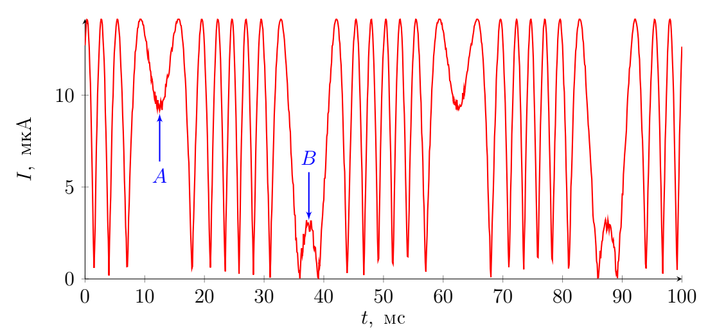

Y26 (2026) — English translation
Let's express the volume of rubber: \[V=\pi D^2 h\]Let's differentiate the expression: \[2D \, \delta D \,h+D^2 \, \delta h=0\]From here:
\[\delta L=\pi N\delta D=-\dfrac{\pi N D}{2h}\delta h\]
The volumetric strain energy density is expressed as: \[w=\dfrac{E\delta L^2}{2 L^2}\]Wire volume: \[V=\dfrac{\pi^2 d^2 ND}{4}\]Let us express the answer in terms of the quantities specified in the condition:
The total energy is equal to: \[2W=\dfrac{E\pi^2 ND d^2(x-y)^2}{16h^2}\]Let us express the force acting on the load: \[F=\dfrac{\partial (2W)}{\partial(\delta h)}=M\ddot x\]The final equation: \[\ddot x+\dfrac{E\pi^2 ND d^2 x}{8Mh^2}=\dfrac{E\pi^2 ND d^2 y}{8Mh^2}\]From here:
Let's use the method of complex amplitudes: \[x_0(-\omega^2+2\zeta i\omega\omega_0 + \omega_0^2)=\omega_0^2 y_0\]We express $h_0=x_0-y_0$: \[h_0=y_0\left(-1+\dfrac{\omega_0^2}{\omega_0^2-\omega^2+2\zeta i\omega\omega_0}\right)\]Taking into account that $L_0=\Lambda h_0$, we write the answer:
Let us consider the behavior of the load in the low-frequency limit. Let us consider one harmonic of oscillations $y$. Let us simplify the expression for $L_0$ in the limit $\zeta\omega_0\ll\omega\ll\omega_0$: \[L_0\approx \dfrac{\Lambda\omega^2 y_0}{\omega_0^2},\] which corresponds to $L=-\dfrac{\Lambda\ddot y}{\omega_0^2}$. When adding several low-frequency harmonics, this relationship still holds. Let us express $K_a$: \[K_a=-\dfrac{\omega_0^2}{\Lambda}={\dfrac{E\pi d^2 }{4Mh}}\]Now consider the behavior of the load in the high-frequency limit. Let us similarly consider one harmonic of oscillations $y$. Let us simplify the expression for $L_0$ in the limit $\omega\gg\omega_0$: \[L_0\approx-\Lambda y_0\]When adding several high-frequency harmonics, this relation is still satisfied. In this case $K_s=-\dfrac{1}{\Lambda}=\dfrac{2h}{N\pi D}$.
Here, $\varphi_0$ is the incident phase difference between the light passing through the fiber wound on the right and left supports, respectively, at $\delta L=0$.
Note. You don't have to watch the $\varphi_0$ sign. In other words, solutions differing by the change $\varphi_0 \to -\varphi_0$ are considered equivalent.
After passing through the interferometer, waves with complex amplitudes \[\frac{ri}{\sqrt{2}} E_0 e^{2ikn \, \delta L + i \varphi_0}\quad\text{and} \quad \frac{r}{\sqrt{2}} E_0 e^{-2ikn \, \delta L},\] arrive at the splitter, so the total is \[ \begin{split} E = \frac{ri}{2} E_0e^{2ikn \, \delta L + i \varphi_0} - \frac{ri}{2}E_0 e^{-2ikn \, \delta L} = -\frac{riE_0}{2}\left( e^{2 i k n \, \delta L+ i \varphi_0 + i \pi} + e^{-2ikn \, \delta L}\right) = \\ = -\frac{riE_0}{2}\left( e^{2 i k n \, \delta L+ i \varphi_0/2 + i \pi/2} + e^{-2ikn \, \delta L - i \varphi_0/2 - i \pi/2}\right) e^{i \varphi_0/2 + i \pi/2} = -ri E_0 \cos\left( \frac{4 \pi}{\lambda}n \delta L + \frac{\varphi_0}{2} + \frac{\pi}{2} \right) \end{split} \] \[I = EE^* = r^2 I_0 \sin^2 \left( \frac{4 \pi}{\lambda} n \delta L + \frac{\varphi_0}{2} \right)\]
The oscillation period of the picture is $T=63~\mathrm{ms}-13~\mathrm{ms}=50~\mathrm{ms}$, hence:
Half of the oscillation period corresponds to a change in $\ddot{y}$ from $-(2\pi f)^2 Y$ to $(2\pi f)^2 Y$.
Let us assume that the argument $x$ of the function $\sin^2 (x)$, which describes the light intensity at point $A$, is in the interval $(0, \pi/2)$. Then at the point with practically zero current to the left of $B$ it is equal to $7 \pi$. The amplitude of current fluctuations is $I_o = 14.2~\mathrm{\mu A}$. Current values at points $A$ and $B$: $I_A=9.7~\mathrm{\mu A}$, $I_B=3.2~\mathrm{\mu A}$. That means $x_B - x_A = 7 \pi + \arcsin(\sqrt{I_B/I_o}) - \arcsin(\sqrt{I_A/I_o})=21.5$. As a result, \[ x_B - x_A =\frac{4\pi}{\lambda}(\delta L_B - \delta L_A) = \frac{4 \pi n}{\lambda} \cdot 2 \frac{(2\pi f)^2 Y}{K_a} \quad \Rightarrow \quad Y = (x_B - x_A) \frac{\lambda K_a }{32 \pi^3 n f^2}=1.46~\mathrm{\mu m}\]

The described system has one degree of freedom, but the deformation energy at the two supports adds up, therefore \[2 \langle W \rangle = \frac{1}{2} k_B T \quad \Rightarrow \quad \langle \delta h^2 \rangle = k_B T \frac{8h^2}{E \pi^2 N Dd^2} \]Taking into account that $\langle \delta L^2 \rangle = \Lambda^2 \langle \delta h^2 \rangle$, we obtain \[\langle \delta L^2 \rangle = 2k_B T \frac{ND}{E d^2} \]
\[ \Delta \varphi_i = \frac{2\pi}{\lambda} (n+\beta \Delta T_i) \Delta L_i (1 + \alpha \Delta T_i) - \frac{2\pi}{\lambda}n \Delta L = \frac{2\pi}{\lambda}(n \alpha + \beta) \Delta L_i \Delta T_i\]
Let's calculate $\langle \Delta \Phi^2 \rangle$ directly: \[ \langle \Delta \Phi^2 \rangle = \left\langle \left( \sum\Delta \varphi_i \right)^2 \right\rangle = \left(\frac{2 \pi}{\lambda} (n \alpha + \beta) \Delta L \right)^2 \left\langle \left(\sum \Delta T_i\right)^2 \right\rangle \]Using the properties $\Delta T_i$, \[ \left\langle \left(\sum \Delta T_i\right)^2 \right\rangle = \left\langle \sum \Delta T_i^2 \right\rangle + \left\langle \sum \Delta T_i \Delta T_j \right\rangle = p \langle \Delta T^2 \rangle = \frac{L}{\Delta L} \langle \Delta T^2 \rangle.\]
The temperature fluctuations described earlier are a much slower process than the propagation of light, so for any $\Delta \Phi$ it holds that \[ \Delta \Psi = 2 \Delta \Phi \quad \Rightarrow \quad \langle \Delta \Psi^2 \rangle = 4 \langle \Delta \Phi^2 \rangle\]Note that the answer differs by a factor of 2 from propagation along a fiber of length $2L$!
The phase shift on both interferometers is independent, therefore \[\langle (\Delta \Psi_1 - \Delta \Psi_2)^2 \rangle = \langle \Delta \Psi_1^2 \rangle + \langle \Delta \Psi_2^2 \rangle = 2 \langle \Delta \Psi^2 \rangle \]
Due to thermal fluctuations in the mechanical system, the length of the interferometer arms has a noise of \[ \sqrt{\langle \delta L ^2 \rangle} = \sqrt{2k_B T \frac{ND}{Ed^2}}=7.1 \cdot 10^{-12}~\mathrm{m}\]. Due to thermal fluctuations in the fiber, the phase difference has a noise of \[\sqrt{\langle (\Delta \Psi_1 - \Delta \Psi_2)^2 \rangle} = \frac{4 \pi \sqrt{2} }{\lambda} (n \alpha + \beta) \sqrt{ \pi D N \Delta L} \cdot \sqrt{\langle \Delta T^2 \rangle}=2 \cdot 10^{-3},\], which leads to noise in the calculated $\delta L$ equal to $\frac{\lambda}{8 \pi n} \cdot 2 \cdot 10^{-3} = 0.6 \cdot 10^{-10}~\mathrm{m}$. Thus, the contribution from the second effect is an order of magnitude greater, and the minimum possible acceleration is: